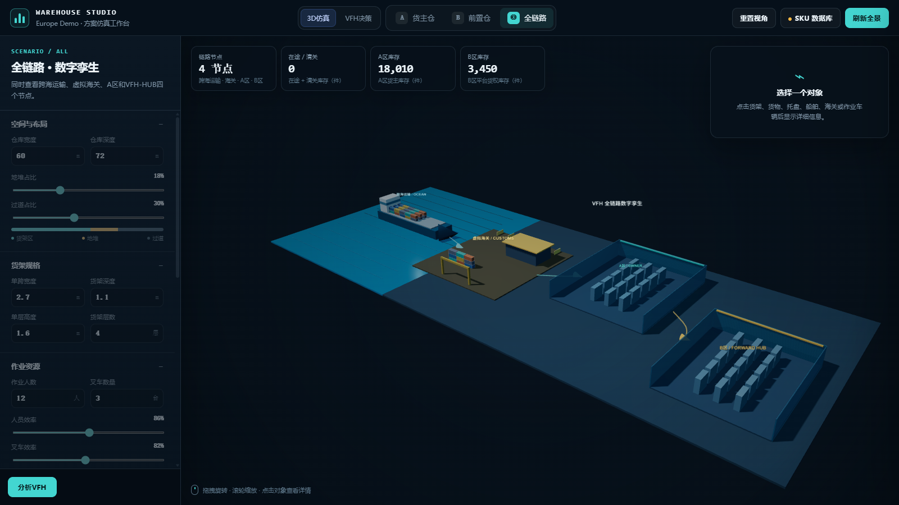
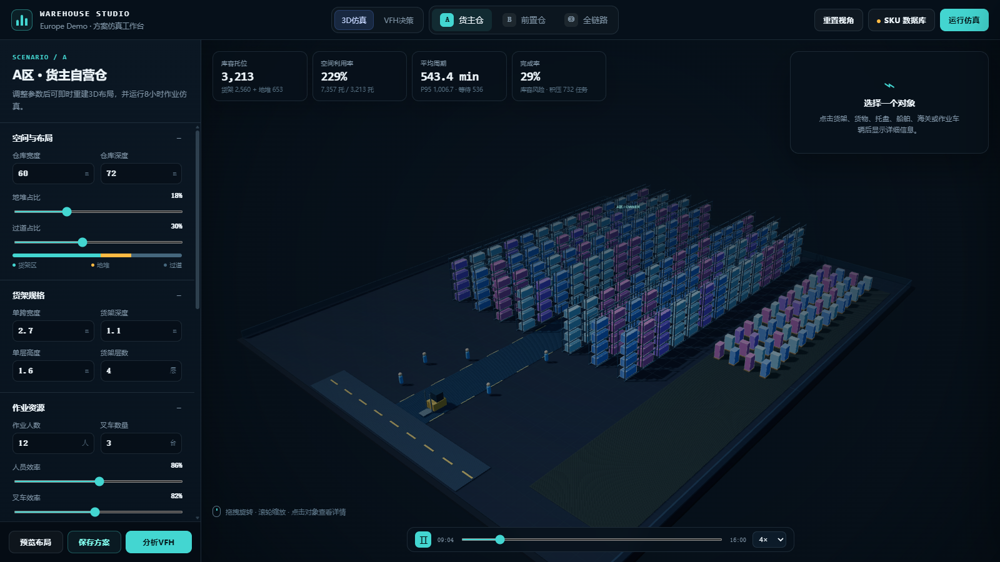
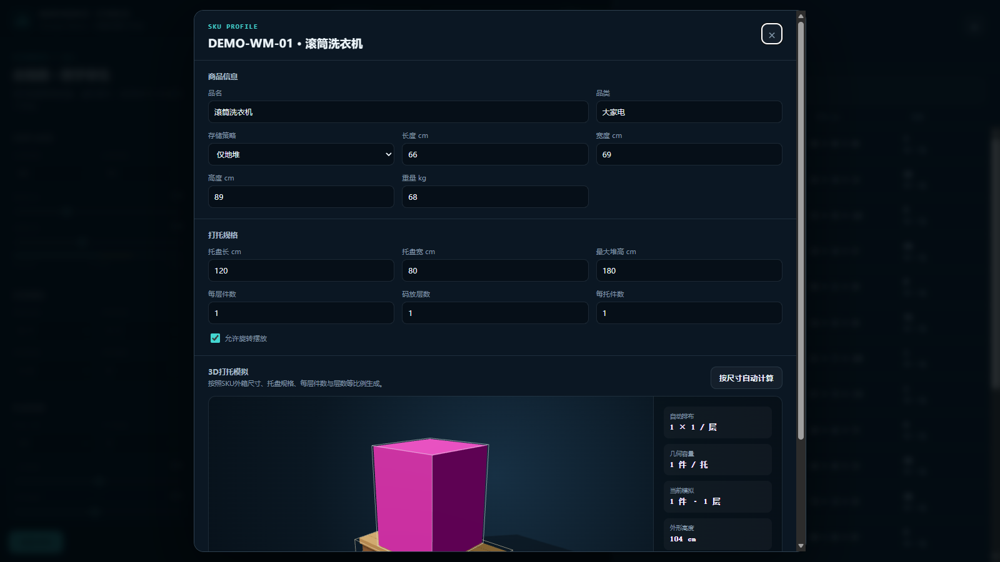
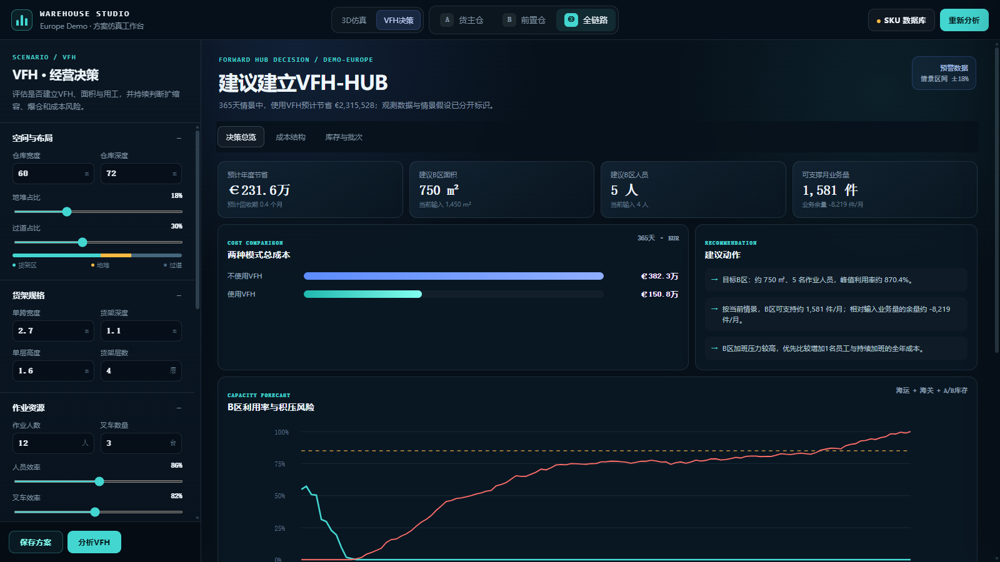
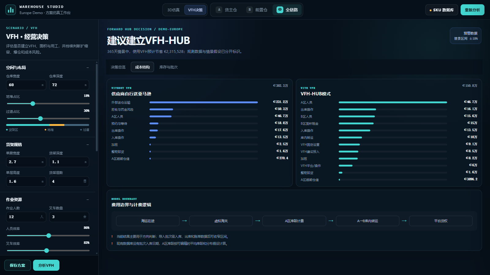
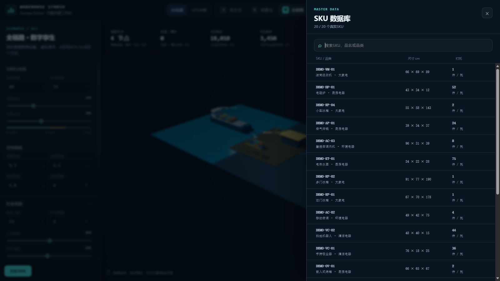
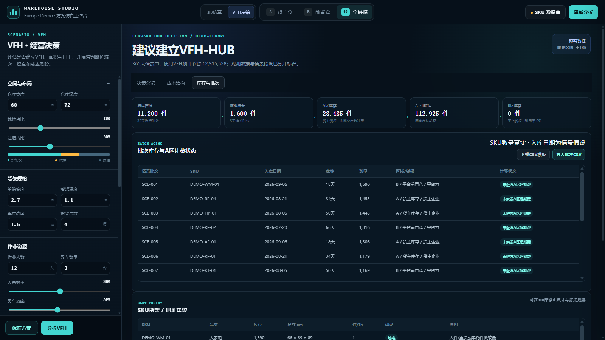

4 节点海运 / 海关 / A仓 / B仓
20 SKU合成可复现样例
7 个视图规划、仿真与经营分析
3D可旋转交互场景
SYSTEM WALKTHROUGH
从空间布局，到经营决策
界面不是静态效果图：货架尺寸、层数、地堆比例、SKU 打托规则、人效、叉车效率和成本参数均可调整。






DEMO FILM

SYSTEM WALKTHROUGH
界面不是静态效果图：货架尺寸、层数、地堆比例、SKU 打托规则、人效、叉车效率和成本参数均可调整。






DEMO FILM